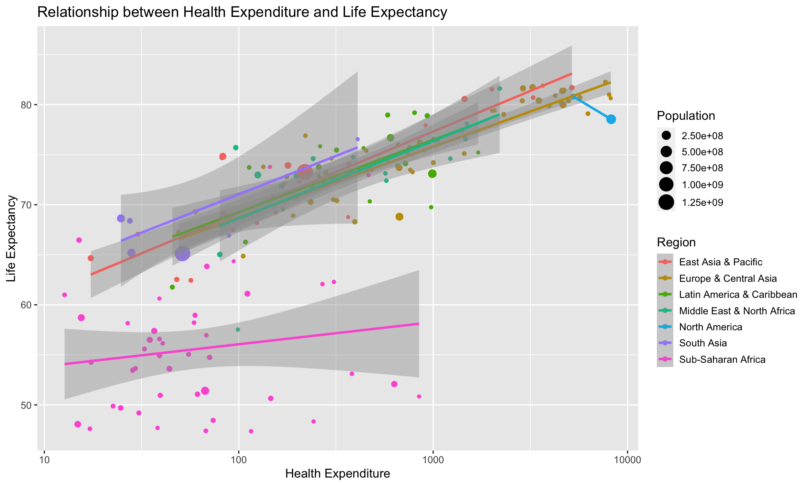
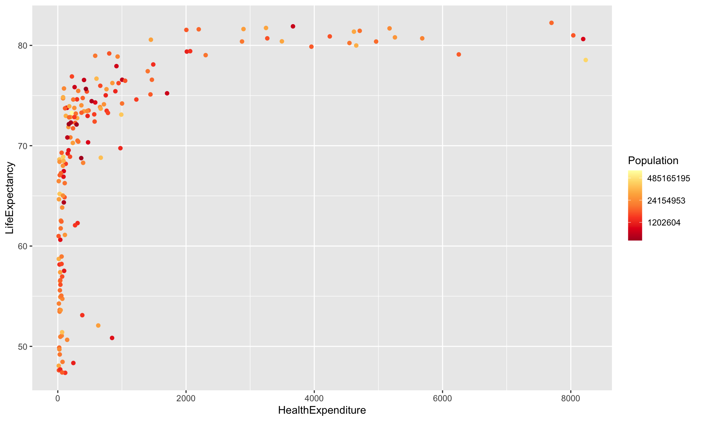
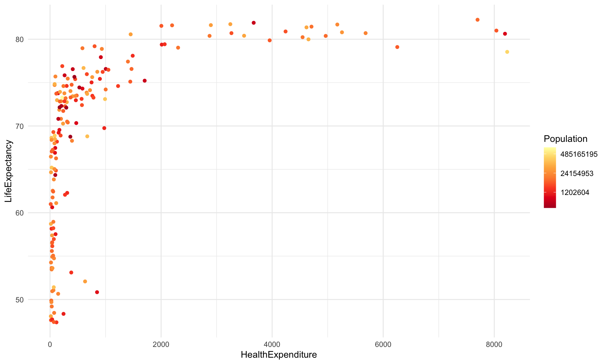
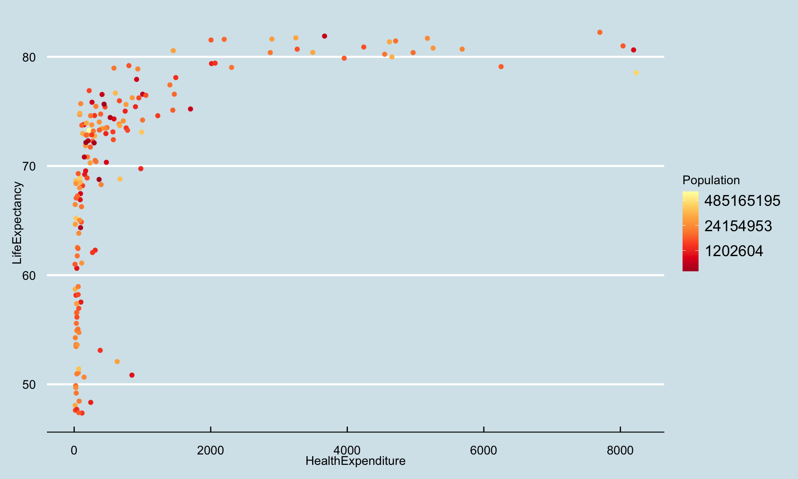
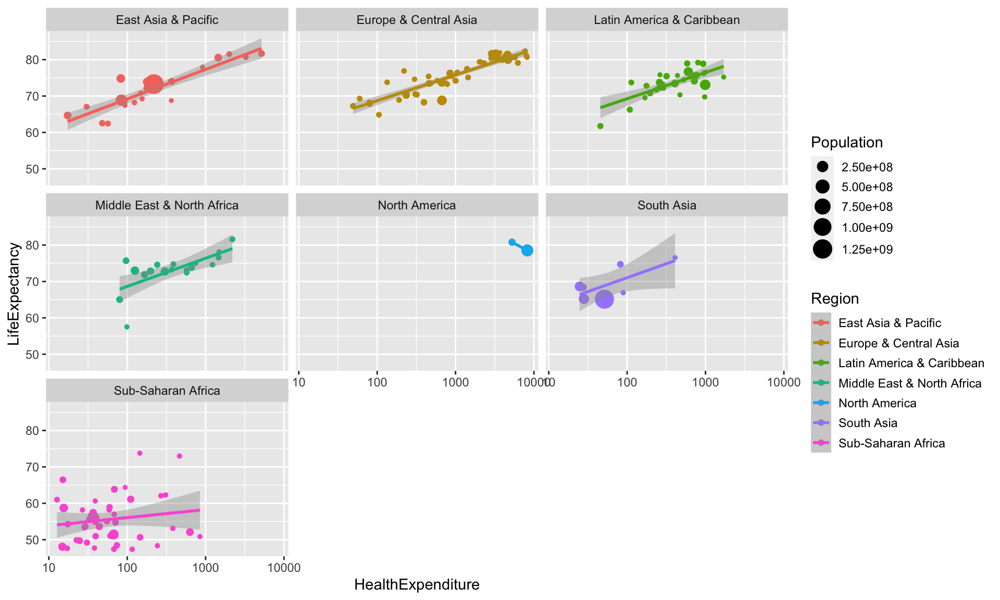

4.3 Modifying Plots
4.3.1 Labels and titles
We can set the plot title using ggtitle(title) and the axis labels using xlab(label) and ylab(label).
ggplot(data=health) +
aes(x=HealthExpenditure, y=LifeExpectancy, colour=Region) +
geom_point(aes(size=Population)) +
geom_smooth(method="lm") +
scale_x_log10() +
ggtitle("Relationship between Health Expenditure and Life Expectancy") +
xlab("Health Expenditure") +
ylab("Life Expectancy") ## `geom_smooth()` using formula 'y ~ x'
Changing the text shown in legends (like in our case the names of the regions) is more complicated. It is almost always easier to simply change the levels of the categorical variable in the dataset itself before invoking ggplot2 commands.
4.3.2 Scales
Aesthetics control which variables are mapped to which property of the geometric object. However, aesthetics do not specify how this mapping is performed. This is where scales come into play. Scales control how any value from the variable is translated into a property of a geometric object: scales control for example how a variable is translated into coordinates (say through a log transform) or into colours (say though a discrete colour palette).
ggplot2 automatically chooses (what it thinks is) a suitable scale. This is usually reasonable, but on occasions it might be necessary to override this.
There is a family of scale functions for each aesthetic. The template for the function name for scales is scale_<aesthetic>_<type>.
4.3.2.1 Scales for continuous data
We have already seen that we can log-transform the axes using scale_x_log10 and scale_x_log10. The more general functions for coordinate transforms are scale_<x or y>_continous(...). We can. amongst others, set the axis label (argument name, the ticks and tickmarks (arguments breaks and labels) the limits (argument limit) and the transform to be used (argument trans).
The axes might use scientific notation (e.g. “4e5”). If you want to avoid using scientific notation and use fixed notation, change the scipen option in R, which controls when scientific notation is used (for example run options(scipen=1e3)).
There are functions for mapping continuous data to other aesthetics, too. For example, scale_colour_gradient converts a continuous variable to a colour using a gradient of colours. The arguments low and high specify the colours used at the two ends. scale_colour_gradient2 allows for also specifying a mid-point colour (argument mid). scale_colour_gradientn is the most general function it allows specifying a vector of colours and corresponding vector of colours. The function scale_colour_distiller uses the colour brewer available at http://colorbrewer2.org/ and allows for constructing colours scales which are photocopier-safe and/or work for colour-blind readers.
a <- ggplot(data=health) +
aes(x=HealthExpenditure, y=LifeExpectancy) +
geom_point(aes(colour=Population)) +
scale_colour_distiller(palette="YlOrRd" , trans="log")
a
We have used trans="log" to use the log-transformed values of the population sizes (due to its skewness). The values given in the legend seem slightly odd choices: this is due to the log-transform (they are roughly \(\exp(14)\), \(\exp(17)\) and \(\exp(20)\), so “nice” numbers on the log scale).
We have stored the plot in a variable a so that we can redraw it later on with different themes.
4.3.3 Statistics
Sometimes data has to be aggregated before it can be used in a plot. For example, when creating a bar plot illustrating the distribution of a categorical variable we have to count how many observations there are in each category. This will then determine the height of the bars. ggplot2 automatically chooses (what it thinks is) a suitable statistic.
For example, when we draw a bar plot using geom_bar, it uses by default the statistic count, which first produces a tally. We don’t need to worry about this, ggplot2 does all the work for us.
ggplot(data=health) +
geom_bar(aes(x=Region)) +
theme(axis.text.x = element_text(angle = 90, hjust = 1)) # Rotate x axis labels
Suppose we now want to a draw bar chart visualising the mean health expenditure in each region. Now we don’t want ggplot2 to produce a tally of how often which value occurs, we want it to simply draw the bars to the heights specified in the data. Because we now want no aggregation, we have to use the statistic identity.
library(dplyr)
HESummary <- health %>% # Get avg health exp
group_by(Region) %>%
summarise(HealthExpenditure=mean(HealthExpenditure))
ggplot(data=HESummary) +
geom_bar(aes(x=Region, y=HealthExpenditure), stat="identity") +
theme(axis.text.x = element_text(angle = 90, hjust = 1)) # Rotate x axis labels
4.3.4 Theming
Themes can be used to customise how ggplot2 graphics look like. We have already used theme to change how the horizontal axis is typeset.
ggplot2 has several themes built-in. The default theme is theme_gray. Other themes available are theme_bw (monochrome), theme_light, theme_lindedraw and theme_minimal. Further themes are available in extension packages such ggthemes.
a + theme_minimal()
library(ggthemes)
a + theme_economist() + theme(legend.position="right")
4.3.5 Arranging plots (faceting)
The function facet_grid(rvar~cvar) creates separate plots based on the values rvar (rows) and cvar (columns) takes. The function facet_wrap(~var1+var2) arranges the plots in several rows and columns without rigidly associating one variable with rows and one with columns. Continuous variables need to be discretised (for example using cut) before they can be used for defining facets.
ggplot(data=health) +
aes(x=HealthExpenditure, y=LifeExpectancy, colour=Region) +
geom_point(aes(size=Population)) +
geom_smooth(method="lm") +
scale_x_log10() +
facet_wrap(~Region)## `geom_smooth()` using formula 'y ~ x'## Warning in qt((1 - level)/2, df): NaNs produced## Warning in max(ids, na.rm = TRUE): no non-missing arguments to max; returning
## -Inf
Arranging plots in more general ways (like in par(mfrow=c(...)) or layout) is not directly possible with ggplot2. The package gridExtra however provides a function grid.arrange, which allows for arranging ggplot2 plots side by side.